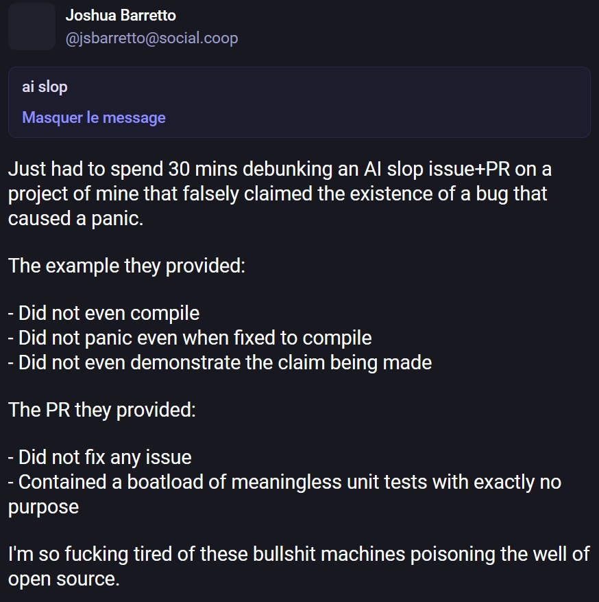
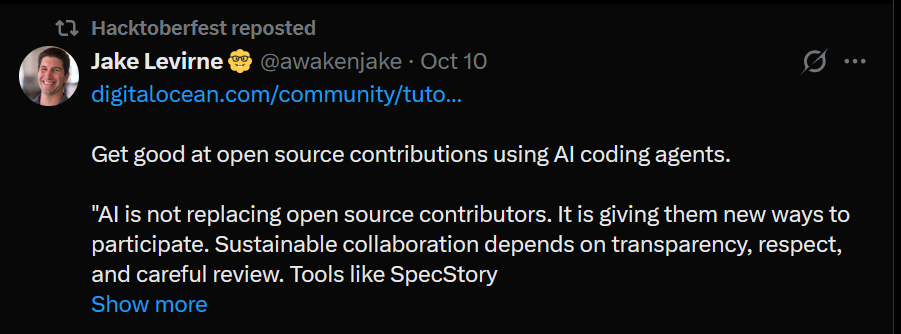
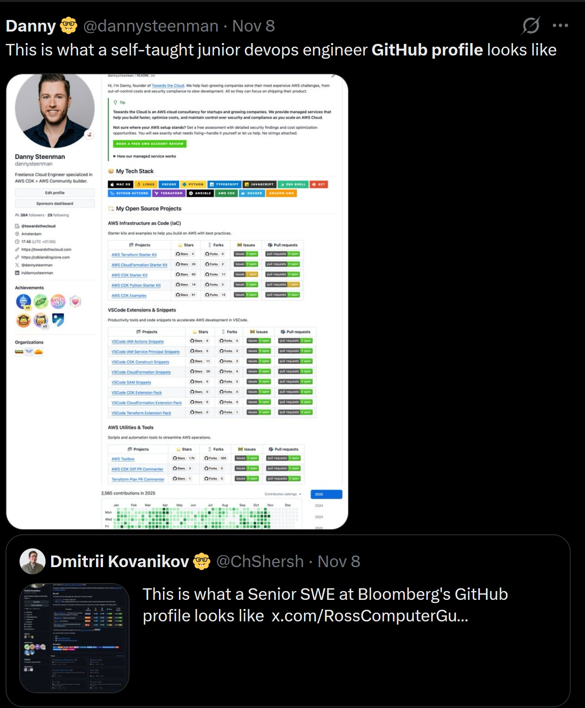
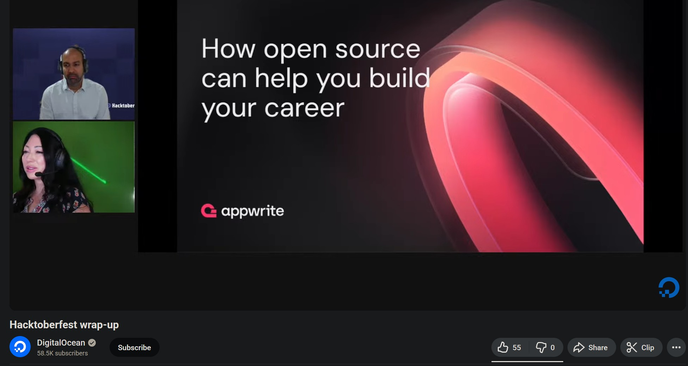
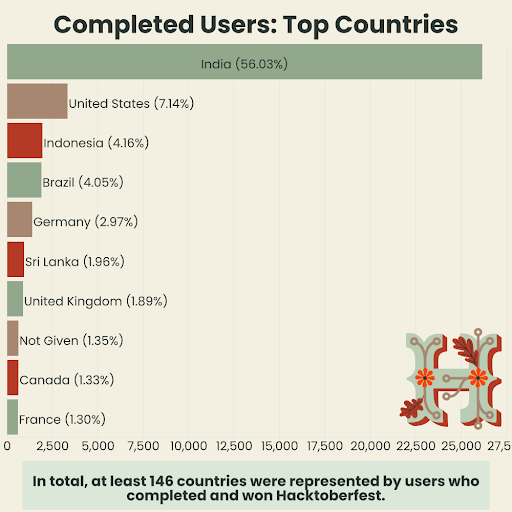
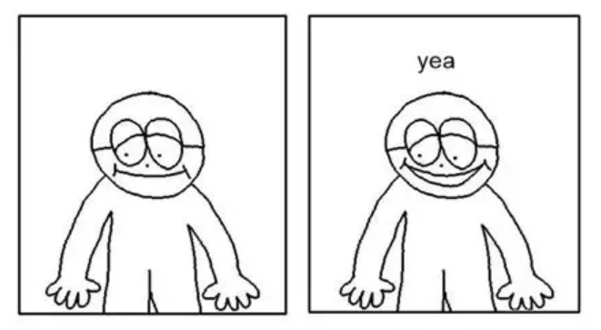

For the uninitiated, Hacktoberfest is a yearly event ran by DigitalOcean, where they encourage new and seasoned software developers alike to work for free contribute to open-source projects throughout the month of October through various incentives.
The most well-known of those incentives is the free T-shirt you can get if you make enough contributions/PRs during the month.

Initially there was no required quality level for contributions, as the idea was obviously to bait as many people as possible into making PRs, with multiple tutorials showing how frictionless the process could be.
("Look how easy this is! You can just help us edit our docs!")
This led to people gaming the system with minimal effort/irrelevant PRs, which culminated in a big spam wave in 2020.
As the maintainer of a small-scale open-source project, I've interacted with Hacktoberfest a fair amount over the past 8 years, and 2020 was... pretty bad! I'm relatively niche but got hit with a bit of spam regardless.
So you can imagine that for larger projects like uhh, the fucking HTML standard?? It was way worse!
A dedicated @shitoberfest Twitter account was made, which used to be a good indicator of when an issue was reaching collective consciousness.
“In reality, Hacktoberfest is a corporate-sponsored distributed denial of service attack against the open source maintainer community. So far today, on a single repository(
whatwg/html), myself and fellow maintainers have closed 11 spam pull requests.”
("DigitalOcean's Hacktoberfest is Hurting Open Source")“It was creating a lot of negative press for us. The very people that we were trying to help were really upset with us. We needed a quick solution. It was an emergency crisis situation.”
("Overcoming spam during Hacktoberfest")
DigitalOcean reined in the spam by making the entire event opt-in, and the shirt reward was eventually removed in 2023.
Hacktoberfest's participation numbers cratered afterwards -- DO posts a recap blog each year with a bunch of stats, and they didn't even post one for 2024.
So for the big 2025... they brought the shirts back??? And boy was I worried!
With AI/vibe coding tools being more prevalent than ever in the developer ecosystem this year, you can see it's already straining OSS maintainers:

So despite the more stringent limitations this year (6 PRs instead of 4, capped to 10,000 shirts), how can there not be a new wave of spam? Especially as Hacktoberfest itself seemed to be incentivizing AI, by retweeting posts like this:

Even the guy that made the
@shitoberfest account 5 years ago is now saying code is commoditized and that you should get on AI agents NOW before the bubble pops and you can't learn them for free anymore.
Surely everyone is going to take advantage of poor old DigitalOcean once again and swarm maintainers with endless slop PRs! So I steeled myself and my little GitHub repo during October and....

Nothing.
Wait what the fuck this isn't right, where is the AI? Why isn't the Copilot/Claude/Cursor triumvirat bombing my email box?
Looking at one of the first repositories that pops up when you search for the hacktoberfest label, the Windows Terminal, they only got ~7 spam PRs during the month, which is less than what whatwg/html got in a single day back in 2020.
I also looked at Home Assistant, and that did get a lot more activity; But most of the PRs seem to be from folks actually working with specific smart device platforms, and not the kind of generic refactored everything to make it more beautiful changes you'd see from someone spamming PRs with the vibe coding printer.
There certainly is some slop in there, though.
So that all got me curious, how many people actually participated this year, and how does it compare to 2020?
I based myself on the DO recap blogposts, so I don't have a number for the amount of PRs in 2024*, and the participants are an estimate from the 2025 announcement... which is literally just a copypaste of the 2024 one with a few word changes btw:

What is this, a Team Fortress 2 update? Anyway, the numbers:
Year 2019 2020 2021 2022 2023 2024 2025 Participants 131841 169886 141000 146981 98855 90000(?) 56768 Shirts awarded 61871 66798 46676 40000 N/A N/A < 10000 Total eligible PRs 483127 387052 294451 335000 118469 Unknown 87929 PRs / participant 3,66446705 2,27830427 2,08830496 2,27920616 1,19841182 Unknown 1,5489184
Wow, it's worse than I thought! You might be wondering where I'm pulling that < 10000 number for the 2025 shirts.
It's pretty easy for me to clear Hacktoberfest each year**, so this year I timed it so that my final PRs would be completed in November, after the official end of the event.
I thought that surely by that point, the 10,000 shirt cap would have been passed and I wouldn't be eligible for one, right?

ayy lmao
To me this confirms that less than 10,000 people even bothered going for the shirt grind this year.
It's a far cry from 2020-2022, and the total PR count is still less than the no-shirt era of 2023 because the participant count just... fell off a fucking cliff??
DigitalOcean counts everyone who registers as a participant, even if they don't make any contributions, so the number is slightly inflated... And yet it's barely over half of 2023's?
Even with the return of the T-shirt*** that caused all this spam 5 years ago?
This leads me to believe that the shirt was a silly facade all along and that the spam wave of 2020 was pretty much coincidental -- So it brings the question, what actually got people to register for Hacktoberfest, and why is that dying?
As Domenic mentioned, Hacktoberfest is corporate-sponsored, so that means that it's primarily about benefiting tech companies. Some of that is obviously covered by getting free labor on projects that have been open-sourced, like the Windows Terminal... But in case you can't get free labor... Surely you can get very cheap labor instead?
That's right! I'm going to be talking about:
The junior Software Engineering rat-race
If you've ever touched GitHub in any shape you've probably seen shit like this:

Open source has gradually gotten LinkedIn-ified over years, as the expectation came in that a good software engineer should have a portfolio of open-source contributions to match.
It's a ghoulish transmogrification of the evergreen "does working on personal projects make me a better developer?" debate - Good developers tend to work on personal/OSS on the side, so obviously it became a requirement to HR firms.
And both Hacktoberfest and their corporate sponsors absolutely play into this whole concept! They're not even fucking hiding it, there are entire slideshows about how "OSS contributions increase chances of getting a job in tech"!

(Isn't it slightly tonedeaf to do this even as big tech is firing thousands of workers in the hope that all their AI somehow picks up and starts making money?)
DigitalOcean is effectively selling the "American dream of software", which is a win-win-win for tech companies:
- Younger devs are trained by OSS maintainers, for free
- With a bit of luck, they'll contribute to your own open-sourced projects, for free
- You'll have access to a wide pool of developers continuously comparing and optimizing their portfolios on a Git repo-turned-social-media... for free
It's also the reason why most of the recorded Hacktoberfest contributors don't come from first-world countries.

(Sourced from the 2021 recap - Also see the 2020 top countries. They stopped reporting those afterwards...)
Except that much like the real American dream, this has essentially dried up.
Now that the job market is in the toilet (not even because of AI outside of big tech, although it's being used as an excuse), the facade doesn't hold up anymore! People aren't going to bother if they know they can't get a job in tech in 2025!
I believe that's the core reason as to why Hacktoberfest is dying -- As with every economic shock, junior hiring has crashed down, so there's no incentive to feed the machine anymore.
why is it a good thing tho
🎵 BGM - You Must Learn All Night Long, Fantastic Plastic Machine
There's a reoccuring theme with software developers that one must always stay on top of the latest trends in software stacks# and tooling lest they become (gasp) "obsolete".
Whether or not that's true is a different debate(although I think it kinda ties with the whole "personal project" debate that's led to the social mediafication of GitHub), but to me it's pretty obvious that this concept is being abused by big tech trying very hard to make AI as indispensable as all the marketing is making it up to be.
I'm gonna quote the @shitoberfest guy one last time:
the ethics, climate and energy topics should not be on your mind as a swe - your job is to get good with the tools.
Isn't that kinda fucked up?
"Don't worry about how ghoulish this all is bro just get good at prompting you can't fall behind"
The argument being that no matter what, companies will cheap out on trying to make good software if they can use AI for it, so you must know/use AI to remain relevant.
But if you're a junior developer, the whole industry is seemingly telling you to go fuck yourself already -- So why even try at this point, right?
I reject this viewpoint.
I don't believe that companies will be able to keep using coding assistants## once their very unsustainable funding runs out, so the threats just ring hollow to me.
It would be a threat if big tech's push for AI adoption actually succeeded - But as this Hacktoberfest is showing, I'm not seeing a tidal wave of AI-generated open source contributions.
You're trying to sell me this shit as a world-changing productivity improvement, and yet people who would be most likely to interact with it (would-be junior devs and OSS contributors) aren't jumping on it? How can that even work?
Once junior developers (inevitably) become desirable to hire again, I don't think whether you're le epic 10x prompt engineer or not will be a key differentiator. Hold out! Programmer!
I do think that you can use your Github profile as a resume, but (hot take) I don't think the tools matter that much if you've managed to make cool things and share them with the wider world as free software!
LANraragi started life as a collection of Perl CGI scripts and uses Redis for data persistence to this very day even though using a relational database would be "the proper way of doing it"...
Closing words
This is probably the largest blogpost I ever wrote (and I cut a bunch out!) and I'm hoping I got all the AI rambling out of my system for the foreseeable future.
Overall the best reponse to this entire big tech shit ouroboros is to not engage with any of it, and that includes Hacktoberfest.
But instead you can still engage with free software -- If we look back at Home Assistant, that is positively thriving. I think it's notable that one of the most popular projects on Github is the one that's specifically designed to free control of your smart home from capital.
In a fairer world, Microsoft, Google and co. should be held accountable for how they've cannibalized free software time and time again, from outsourcing R&D### and bugfixes, to outright pilfering decades of code to train their AIs.
Once the bubble pops and they come back begging, don't forget how hard they tried to burn it all down!
Keep making cool shit and don't let yourself be exploited by companies trying to profit off your desire to learn.
I wonder what the WHATWG guy is thinking about all thi--oh, he retired.

wow i wish i had google money too!
* You could potentially scrape GH to see all the PRs made in October 2024 on Hacktoberfest-enabled repos, but the number would potentially still be imprecise, as I don't think there's a way to know if a repo would have the hacktoberfest label back in 2024 instead of just now.
** Since I'm just working on my OSS projects as usual -- There's been a new LANraragi release and I spent some time on a custom version of my McDonald's LCD simulator for Burger Bard. There's also a Stylophone update pending but I haven't wrapped up Liquid Glass for iOS yet...
*** Back then the shirt wasn't the only incentive too; DO also used to offer free credits for their VPS hosting service as part of the event, and it was fairly common back in 2019 for other large OSS entities to offer their own swag packs for PRs outside of Hacktoberfest -- I did it too!
Nowadays, all you really get are Holopin badges which are just the software equivalent of Xbox 360 achievements.
(And who also play somewhat into the whole gamification/resume building thing, although it seems quite inconsequential in comparison)
# Have you learned your Charm stack with Bubble Tea v2 and Lipgloss in Go yet bro? (No shade being thrown, I just find the names very funny)
## Lower-cost models that just do code autocomplete and maybe the chat ones will probably stick around and run on-device, but those aren't in same ballpark as the whole agent shit that's being sold now. And those will get outdated in time if there's no more funding to train new ones so....
### Now that WinUI 3 is fully open-source, everyone's hoping people will fix (for free) what Microsoft has failed to fix ever since Windows 8 and I think that's hilarious